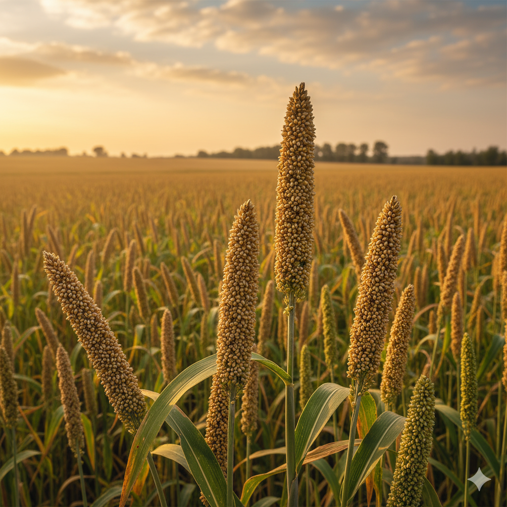
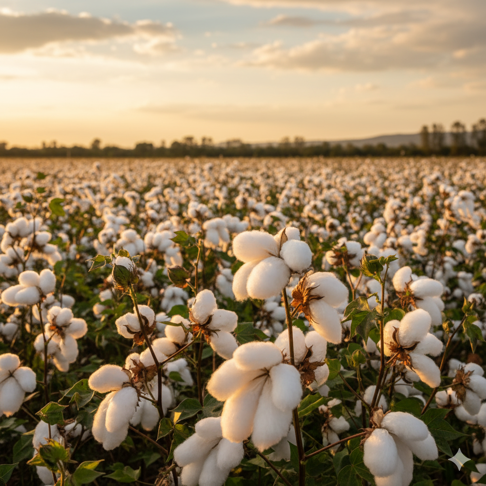
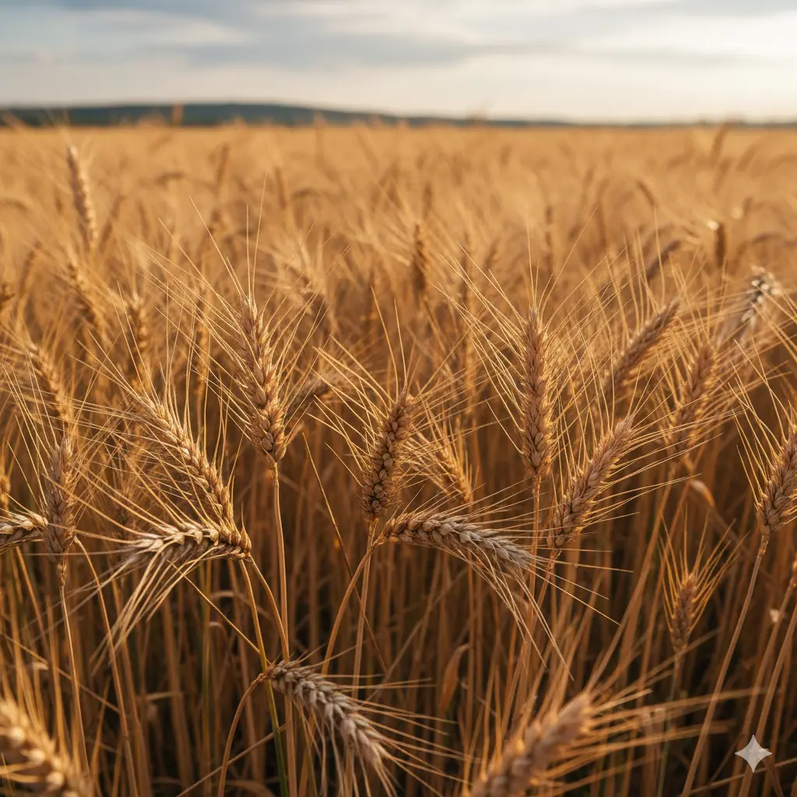
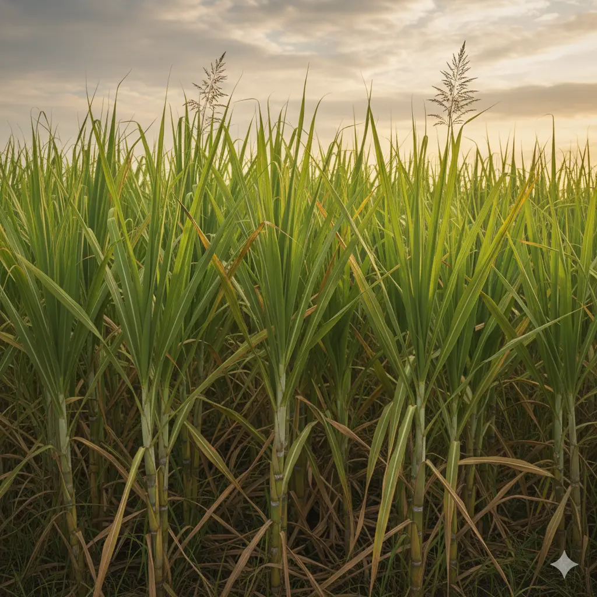
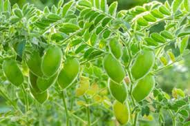
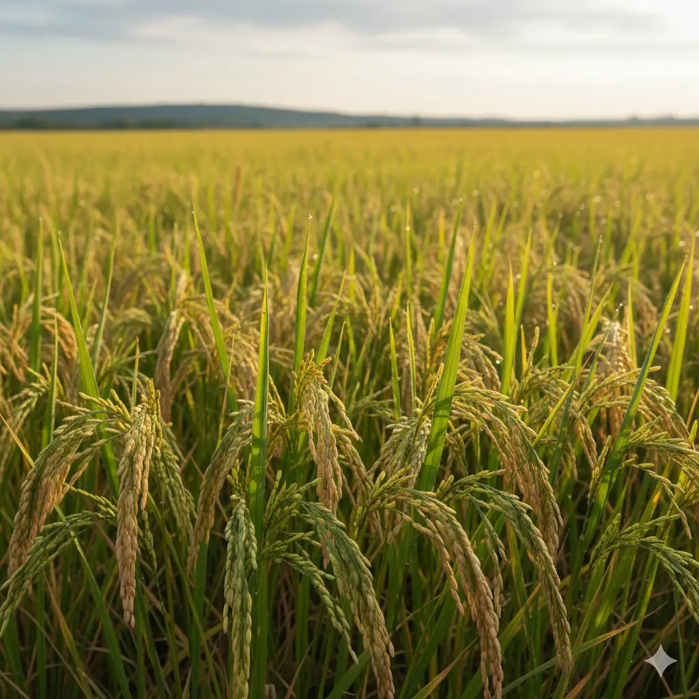

Crop Suggestion
Crop Suggestion Tool
Get personalized crop suggestions based on your soil data and preferences.
Get Started

Bajra
Drought-resistant crop, ideal for arid regions with sandy soils.

Barley
Hardy grain that grows well in cool, dry climates and saline soils.

Cotton
Suits warm climates with black or alluvial soils and long frost-free periods.

Wheat
Optimal for temperate climates with well-drained loamy soil.

Maize
Adapts to diverse climates, preferring fertile, well-drained soils.

Sugarcane
Prefers tropical climates with rich, well-drained soil.

Gram
A cool-season pulse crop that grows well in light to heavy soils.

Rice
Thrives in warm, humid climates with clayey or silty soil.